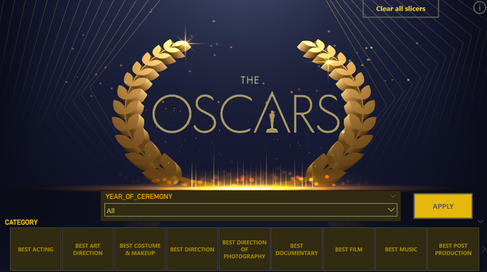

data analyst · puducherry, india
I validate, reconcile, and visualize operational data — building the dashboards and trackers that let teams catch discrepancies early and act on what the numbers actually say.
I'm a Data Analyst currently working as an MIS Junior Executive at Straive Pvt. Ltd., where I validate, reconcile, and monitor operational reports across multiple data sources on a daily, weekly, and monthly basis. My path into data started with a Bachelor's in Computer Applications, followed by an IBM-certified Data Analyst Full Stack program and a Deloitte Australia Data Analytics job simulation — both of which sharpened my ability to move from raw data to structured, decision-ready insight.
What draws me to data analysis is the moment a messy, inconsistent dataset becomes a clear pattern — a discrepancy traced to its root cause, or a trend that changes how a team plans its next move. I enjoy the detective work of reconciliation and anomaly detection as much as the creative work of building a dashboard that makes that discovery obvious to someone who has thirty seconds to look at it.
My core strength is attention to detail paired with the technical range to act on it — moving between Excel-based trackers, SQL queries, Python and Pandas scripts, and Power BI dashboards depending on what the problem calls for. As I grow toward a Data Analyst role at a tech firm, I'm focused on applying these same skills to product, user, and business-metrics data at greater scale.
August 2025 – present · Puducherry
Decades of Academy Award data — winners, nominees, categories, demographics — existed as disconnected, hard-to-compare records, making it difficult to spot long-term trends in nominations or category performance.
Replaced manual cross-referencing across sources with a single interactive view, surfacing clear category-level nomination trends and demographic patterns across award history.

| technical tools | Python, SQL, Power BI, Advanced Excel, Pandas, Matplotlib, Google Sheets |
|---|---|
| methodologies | Data validation, data reconciliation, data cleaning, ETL processes, exploratory data analysis, statistical analysis, dashboarding, DAX |
| domain | MIS reporting, production and QC data workflows, root-cause analysis, process improvement |
| working style | Attention to detail, anomaly detection, problem solving, cross-functional collaboration, documentation |
Open to Data Analyst roles at tech firms — happy to talk through a dashboard, a dataset, or where you're hiring.